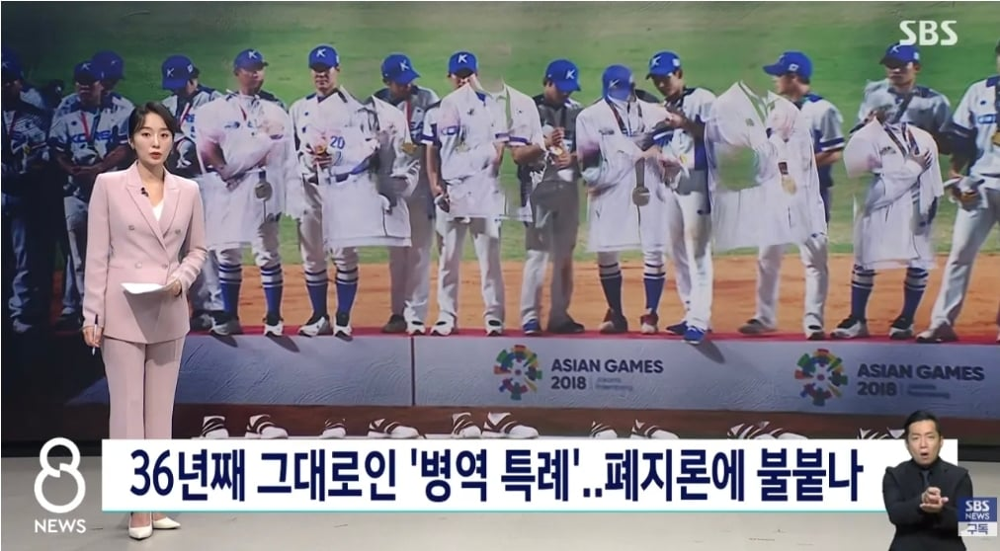

'양민혁법'
재정

'양민혁법'
재정
그 말이 안나올수가 없다
추신수법의 전례가 있어서 이번것도 가능의 영역일수도 있음
추신수법은 또 뭐야?
최후의 한명까지 징집중인데 명예보다 면제가 좋다고 하면 보상을 지워야지
임대 떠돌다 k리그 강원 복귀 기원
이젠 폐지해야지
여성징병은 누가 불지를까 너무궁금하네 ㅋㅋ
양민혁명
개도국 시절도아니고 개인의 영광에 왜 국방의 의무를 면제해주는지 모르겠음
이제는 국위선양 으로 면제는 그만해도 될거 같음
이미 대한민국은 이제 모르는게 상식 미달이라는 소리 들을 나라라
오징어게임과 케데헌에 절 두번식 하면 됨
안그래도 징집인원 적어서 나라에선 호시탐탐 폐지 노렸을건데 갈때됐지
사례를 잘 만들어줬다요
이제 메달 좀 적어질 수 있겠지만 알게뭡니까
근들갑 ㅋㅋ
이제 국민들이 예전에 비해 메달에 관심이 낮아지고, 안 그래도 말 많던 건데 굳이 입 함부로 놀려서 불쏘시개 만듦.
애초에 국민들의 국제 스포츠 경기 결과에 대한 관심이 예전 개도국 시절보다 줄어들었고
더 이상 스포츠의 국위선양 효과가 다른 문화 컨텐츠에 비해 크지도 않을 뿐더러,
국위선양을 위해 엘리트 스포츠 선수를 양성한다는 논리는 이제 구시대적인 발상임..
오히려 선진국답게 가려면 엘리트 스포츠 선수 양성이 아닌 사회인겸 스포츠 선수들이 메달을 딸 수 있도록 장려하는 게 선진국 답지
스포츠 선수 입에서 "메달보다 군대 뺀 게 너무 좋아요" 뉘앙스의 말이 나올 정도면 군면제는 없애는 게 맞음. 아니 무조건 없애야 됨.
선진국에서 엘리트 스포츠 안 한다는거 지나간 얘기임
생활체육이니 했다가 처음에 메달 몇번 땄다가 장기간 메달권 아웃되니까 다시 투자 하고 있음
시대가 바뀌면 법도 바뀌어야지
저딴 공놀이 면제 해줄거면 공돌이들이나 면제해줘라
일단 아시안게임 금메달은 면제가 아니라 예술체육요원으로 병역 의무를 수행하는 거고, 3주 훈련소 다녀오고 3년간 메달 딴 종목에서 종사하고 유소년 교육 등 봉사활동 500시간인가 하는 거임.
그리고 비슷한 제도로 공돌이는 전문연구요원이라는게 있고 훈련소 다녀오고 3년간 박사과정이든 이공계 회사 (보통 중소기업)에서 일하는 방식으로 병역 의무를 수행하는 걸 매년 2천명씩 뽑음.
결론은 이미 있고, 공놀이랑 비교도 안되는 수준으로 크게 운영중임
예술체육요원은 원래 제발 군대 버겁다고 해외로 귀화하지 말아달라는 의미에서 만든 건데 이제 잘 모르겠음
올림픽, 월드컵은 ㅇㅈ.
아시안게임은 그냥 지역축제인데...
월드컵은 없는디
BTS도 군대 갓는데? 이게 너무 쎄다 ㅋㅋㅋ
ㄹㅇ ㅋㅋㅋㅋ 이게 너무 강함 ㅋㅋㅋㅋㅋ
법 만들어지면 후대 남자 스포츠인들은 개빡치겠네 ㅋㅋ 근데 나도 저거 없어지는게 맞다고봄
그냥 조크보 국제대회 성적 점수에 따른 FA일수 채우는 것처럼 병역에도 도입시키자.
예시) 아시안게임 -금 1개월 단축, 프리미어 우승 -6개월 단축 WBC 우승 6개월 단축 올림픽 금 - 6개월 단축 이런식으로
저 어린 놈 덕에 제도를 고치게 되는구만. 다행이다
요즘엔 스포츠에서 쏘니나 페이커 정도나 국위선양으로 볼까고
그리고 이말 하게 될지는 상상도 못했는데 최근은 케이팝 가수들이고
현 시대 국위선양의 대표급인 BTS도 군대 간다
운동선수는 20대가 황금기고 가장 많이 벌때라고?
BTS도 가장 황금기이고 때 돈 벌 시기에 군대 감
그리고 아시안게임? 스포츠계에선 세계선수권이 더 쳐주는데 이건 와 안주노 ㅋㅋㅋㅋㅋ
장애인 고아 다 데리고 가면서 공놀이 전문가는 왜 안가냐고 ㅋㅋㅋ
호이가 계속되면 둘리인줄 알아요